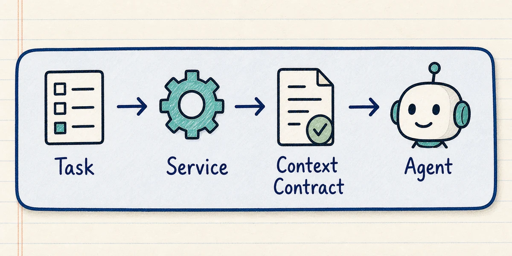
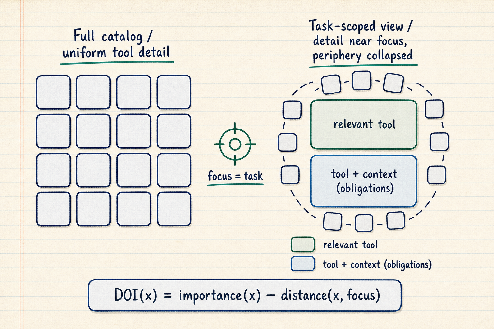

Choose one task
Pick a workflow with clear service rules and a measurable completion record.
Open sourceFramework + Python reference library
Keep your API for execution. The reference path uses MCP to ask the service for a task-scoped context contract before the agent acts.
Begin with one workflow. Expand only when the boundary proves useful.


A billing API might expose forty operations. For this illustrative task, the service could identify four relevant actions, attach approval and recordkeeping requirements, and prescribe the receipt the interaction must return.
CBO packages that service knowledge as one versioned context contract instead of asking each agent integration to reconstruct it.
Pick a workflow with clear service rules and a measurable completion record.
Declare the capabilities, state, policy, authority, and evidence the task requires.
Use the standard connection to deliver the task-scoped view alongside the callable surface.
Evaluate the obligations at the boundary and retain the contract-bound record.